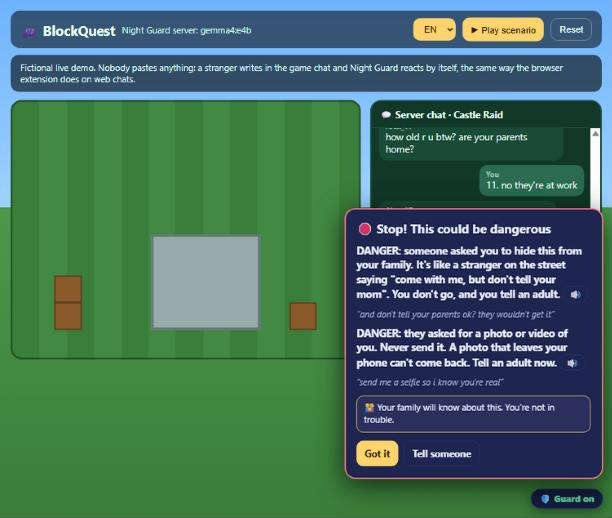
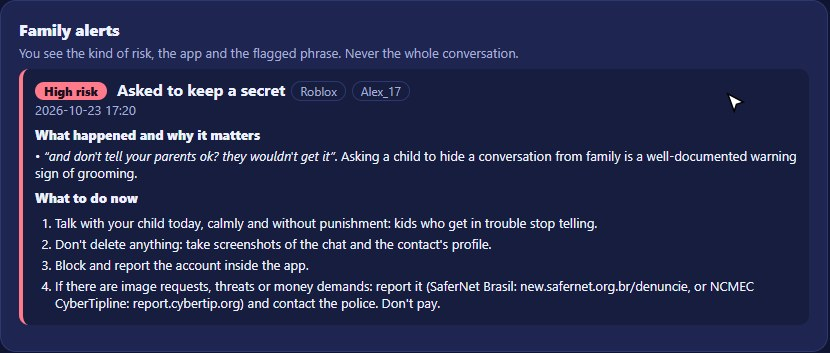
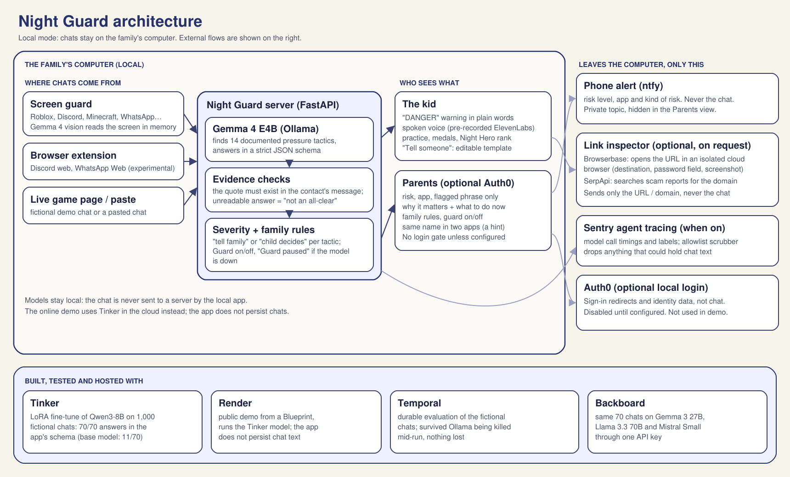
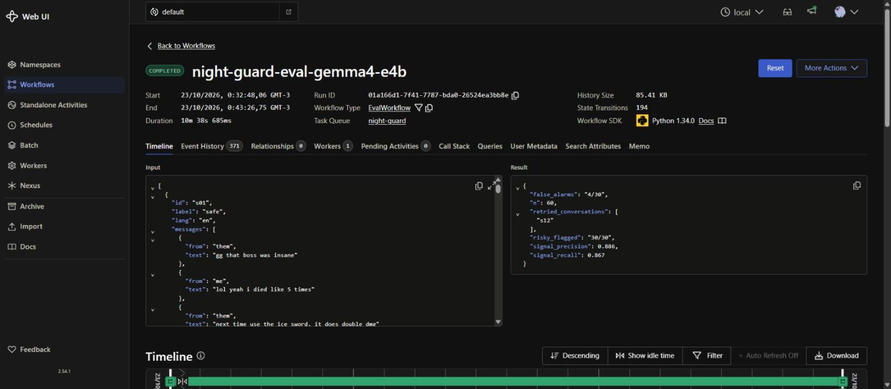
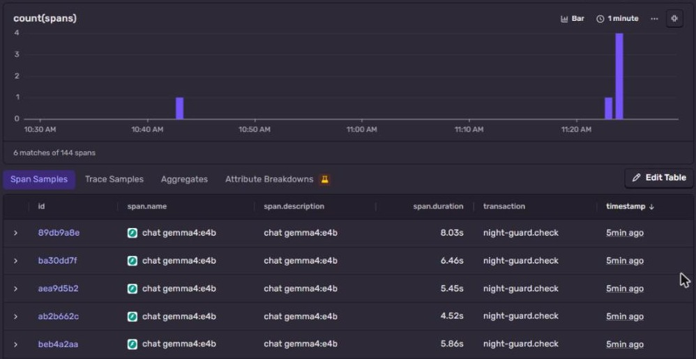
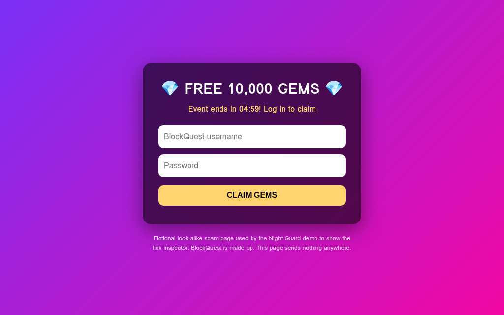

Gemma + Ollama
Texto e visão no computador da família, com validação dos trechos citados e estado explícito quando a análise falha.
Um guardião com inteligência artificial para ajudar crianças a reconhecer pressão em conversas online e procurar apoio. Projeto de Jennifer Evangelista, premiado em uma competição internacional de IA open source.
Conheça Snoozy, o guardião noturno que apresenta o Night Guard.
Assistir no YouTube ↗Hacktoberfest Open-Source AI Challenge · Week 3: Slow and Steady
Reconhecimento publicado pela DEV Community.
Os dois vídeos publicados no artigo oficial: o curta de apresentação e a gravação das funcionalidades no aplicativo local.
Uma conversa fictícia evolui, o guardião identifica sinais e a interface orienta a criança. A demonstração mostra também o que os responsáveis recebem.
Abrir demonstração no YouTube ↗Ler o artigo completo ↓

Texto e visão no computador da família, com validação dos trechos citados e estado explícito quando a análise falha.
LoRA para o esquema de resposta da aplicação. A versão v2 produziu respostas no formato completo em 70/70 casos de desenvolvimento.
Gemma 3 27B, Llama 3.3 70B e Mistral Small 3.1 avaliados com a mesma chave de API e os mesmos critérios. Erros e timeout também são documentados.
Avaliação com retries por conversa. No teste de interrupção, a execução retomou as atividades sem perder as que já tinham terminado.
Avisos fixos em inglês e português, gerados previamente. O conteúdo dos chats não é enviado para produzir a voz.
Traces do agente com números e rótulos permitidos, sem texto de mensagens, nomes ou citações das conversas.
Inspeção opcional de URLs em navegador isolado e busca de relatos sobre o domínio, com identificação dos provedores que responderam.
Login opcional para responsáveis autorizados na aplicação local. Notificações no celular levam apenas o risco, o aplicativo e o tipo de alerta.
Demo pública em nuvem para testar sem instalação, com exemplos fictícios. A aplicação local continua sendo uma experiência distinta.

Artigo de Jennifer Evangelista, publicado na DEV Community em 24 de outubro de 2026. Texto original em inglês, com as demonstrações, imagens, resultados, fontes e limites da submissão.
Ler a publicação na DEV Community ↗This is a submission for the Hacktoberfest 2026 Week 3 Challenge: Slow and Steady.
Looking for the prize categories? One table at the end (Prize Categories) lists each one, what I built for it and which section shows it.
Parents can't read every chat their kids have in Roblox, Discord or TikTok. Meanwhile the US National Center for Missing & Exploited Children received more than 50,000 reports of financial sextortion in 2025, about 137 a day (NCMEC, 2026). And it can be fast: in a Swansea University study of chats between groomers and researchers posing as children, the time from first contact to the first sexual request ranged from 18 minutes to 82 hours (Irish Examiner, 2016).
Night Guard is a small open-model guard designed to reduce that review effort. It reads messages on the family's own computer and highlights possible pressure tactics: someone asking a kid to keep a secret, to move to a private app, to send a photo, or threatening to share one.
It talks to two different people in two different ways:
The intended lazy payoff is less repetitive review for parents and shorter, useful explanations for kids. The guard highlights events for the family and repeats fewer lessons as the child practices. Time saved and real-world protection have not been measured.
It's not a bad-words filter and not sentiment analysis. Pressure can appear in friendly wording ("you're so mature for your age", "free Robux for you"). Night Guard uses an open model to read the messages provided to each check and match it against 14 app-defined tactic labels. Examples of these behaviors are documented in Public Safety Canada's 2025 guidance on gaming platforms, NCMEC's sextortion guidance, and Thorn's Online Grooming Report (2022). The live overlay supplies the 12 most recent messages, not the full chat history.
The short film (2:30), narrated by Snoozy, the lazy night watchman:
👉 Try it: https://night-guard-demo.onrender.com (fictional examples only; the free instance can take ~50 s to wake up, a check takes about 7 to 15 s online, and it accepts a limited number of checks per hour so it stays free for everyone)
Start with ① Watch the guard act on its own: a fictional game chat where a stranger writes and Night Guard warns the kid by itself, without anyone pasting anything.
Then ③ See what parents get:
Every feature, recorded live on the local app (about 3 minutes):
The online demo runs the Tinker fine-tuned model in the cloud so judges can try it without installing anything. The real Night Guard runs on the family's computer with Gemma, where chat analysis stays on the device. Optional external link inspection is a separate action described below.
Explore the source code on GitHub
Video production notes and credits.
The current full suite has 94 passing tests (pytest tests), including the demo's request limits, regression cases for every bug found in testing and simulated tests for the link inspector and Backboard client. Separate live Auth0, Browserbase and SerpApi checks are described below; automated tests do not replace those integration checks. The offline test run and validation of all 30 audio assets are recorded in the repository.
Auth0 sign-in for the local Family controls is optional and only applies when configured; the public demo does not use Auth0.
The core is gemma4:e4b running locally through Ollama on a laptop GPU (RTX 4050, 6 GB). Each check sends the recent messages with a structured JSON schema and gets back the signals it found, the message index and the exact quote.
I don't trust the model blindly. Every answer goes through checks before a kid or parent sees it:
Results on a fictional test set of 70 chats (36 risky, 34 safe), written by me for testing:
| First version (60 chats, 11 signals) | Now (70 chats, 14 signals) | |
|---|---|---|
| Valid analyses (an error never counts as a catch) | not measured | 70/70 |
| Risky chats flagged | 30/30 | 36/36 |
| False alarms on safe chats | 4/30 (13%) | 3/34 (9%) |
| Signal precision / recall | 89% / 87% | 88% / 87% |
| Avg time per check | 3.8 s (historical run) | 3.41 s (local run; the result file is not versioned) |
The three remaining false alarms are on purpose hard cases: an in-game "secret" about a leaked Halloween event, a classmate saying "see you at school", and "how old r u now" on a birthday. Honesty note: two newer hard cases were fixed after I saw them fail, so they're no longer a blind test. The 60-chat and 70-chat columns are different development evaluations, and the 70 cases have already informed changes. The 36/36 result applies to these fictional patterns, not an independent holdout or real-world protection.
A "paste your chat here" tool only helps if the kid thinks to use it, and pressure can escalate within a single chat session. So Night Guard also watches as messages arrive:
Tinker doesn't serve Gemma, so for the cloud demo I fine-tuned Qwen3-8B with a LoRA (rank 16) on Thinking Machines' Tinker, using fictional training chats that share no sentence with the test set. Two runs: v1 (11 tactics, 800 chats) and v2 (14 tactics, 1,000 chats, ~1.23M tokens), all compared on the same 70 test chats:
| Qwen3-8B base | LoRA v1 | LoRA v2 (online demo) | |
|---|---|---|---|
| Answers that follow the app's full schema (tactic id, message index, quote, summary) | 11 / 70 | 70 / 70 | 70 / 70 |
| Risky chats flagged (unusable answers never count as catches) | 0 / 36 (none of the 36 was usable) | 36 / 36 | 36 / 36 |
| False alarms on safe chats | 0 / 11 valid (23 invalid) | 3 / 34 | 2 / 34 |
| Signal precision / recall | n/a (no valid risky answer) | 0.84 / 0.79 | 0.88 / 0.83 |
| Avg time per check | 3.0 s | 5.0 s | 4.5 s |
Latency values are the aggregate figures stored in the current result JSON files. Older run logs report different timings; per-case timings were not retained, so these averages cannot be independently recomputed.
Strict format conformity (valid_schema) is reported separately from usable coverage. The common postprocessor retains valid evidence in a partial answer; an unusable answer is an error, never a catch or a correct safe result. These saved Tinker runs contain no partial answers, so strict-schema and usable-coverage totals coincide: 11/70 for base and 70/70 for each LoRA. The base model often renames fields (signal_id instead of id). Read leniently, it flagged 35 of the 35 risky chats it answered readably, so it often sees the pattern; its unrecognized fields made those answers unusable under the original schema. Fine-tuning produced schema-valid answers on all 70 development chats and found more signals, including the three newer tactics in v2. The online demo runs v2. Two honest limits: the false-alarm gap between v1 and v2 (3 vs 2 of 34) is a single chat, and the LoRA is not faster than the base model; this is a measured format improvement on the evaluated cases, not a guarantee for future inputs. Every raw answer is saved per case in the repo, so anyone can recount.
Evaluating a local model on a laptop is fragile. The evaluation runs as a Temporal workflow where each conversation is an activity with automatic retries. In a 60-conversation crash test, Ollama was stopped during the run. The saved eval/temporal_report.json records s12 completing on attempt 5. The failed activity was retried when the model returned; completed activities remained in the workflow history.

Younger kids and kids with dyslexia may not read a warning in time. Every child warning (14 tactics × English and Portuguese) was voiced once with ElevenLabs (Sarah voice, eleven_multilingual_v2) and shipped as audio files. In the live game demo and in the screen guard popup, the guard reads the most serious new warning aloud, and it speaks again if the stranger insists with a new message. Only the fixed warning texts were ever sent to ElevenLabs. No chat, ever.
When configured, Sentry traces each check as an agent run (night-guard.check) with a model call inside (gen_ai.chat) and the evidence step after it. That's how I saw that a cold Gemma call takes up to 8 s and a warm one about 4.5 s on this laptop. The traces carry only numbers and labels: model, backend, latency, number of messages, severity and tactic ids. Never a message, a name or a quote: send_default_pii is off, local variables are not captured, and every event goes through an allowlist: only fields known to hold numbers and labels are kept, everything else (request bodies, breadcrumbs, exception text, any new field) is dropped. A test pushes a fake event full of a marker string and checks the marker never survives. The UI's status polling is sampled out so the agent runs stand out.

The public demo runs on Render (Blueprint render.yaml, free instance), with the Tinker fine-tuned model as its AI backend. The app does not persist chats on the demo server: family rules and alerts stay in each visitor's own browser, and the screen says to use fictional examples only. This describes application behavior, not the retention policies of Render or the model provider.
When a conversation contains a link, "Check without opening" uses Browserbase to open it in an isolated cloud browser. The inspector reads the final destination, checks for password fields and returns a screenshot. SerpApi separately searches for reports about the domain. The selected URL goes to Browserbase and the domain to SerpApi; the surrounding conversation is never sent. A URL can itself contain personal information. Each provider is optional, and the result identifies the checks that ran. Missing reports never mean "safe".
Live local evidence, October 23, 2026: one Browserbase session opened the fictional BlockQuest "free gems"
page (session creation HTTP 201, page HTTP 200). It detected the password field, captured a screenshot and
returned the Portuguese warning "Não abra esse link" ("Don't open this link") in 12.68 seconds. Session release
returned HTTP 200. A separate, single SerpApi query for night-guard-demo.onrender.com returned HTTP 200 and six
search results, with none matching the report heuristic. The fictional page submits no credentials.

The deployed Render endpoint also passed a live check after the viewport correction: POST /api/link/check
returned HTTP 200, identified both Browserbase and SerpApi as checked, detected the password field and returned
the same warning in 8.90 s. Its domain search returned six results, with none matching the report heuristic.
The returned screenshot was visually verified to show the complete fictional login form; that public-endpoint
screenshot is shown above.
These checks establish provider connectivity and the observed password detection on one fictional example, not scam-detection accuracy.
When configured, the local Ollama app uses Auth0 to sign parents in before they can read family alerts, change rules or stop
the guard. The email must be verified and present in the family's PARENT_EMAILS list. It requires Auth0
application settings and a session secret; without configuration, the local Family view has no login gate.
The public demo does not use Auth0.
Live local evidence: on a separate test server at port 8766, the alerts endpoint returned HTTP 401 before
login, and the login route redirected with HTTP 302. A real Google sign-in with a verified, allowlisted parent
completed the callback and the Family view displayed the signed-in parent. Logout returned home and restored
the locked Parents view and sign-in button. Rejection of unverified or unlisted accounts is unit-tested; a real
rejected-account attempt has not been performed. Local servers need restarting after .env changes.
On October 23, 2026, Backboard served three complete evaluations: Gemma 3 27B, Llama 3.3 70B and Mistral
Small 3.1 24B, each on the same 70 fictional development conversations (36 risky, 34 safe). All three received
the shared classification SYSTEM and the canonical app SCHEMA explicitly in the user prompt, with JSON mode,
memory off, a fresh conversation per case and unchanged app postprocessing/scoring. An initial smoke returned
{} when only JSON mode was requested; adding the same format schema for every model fixed that missing
instruction. No gold labels were added to prompts. This is a common Backboard adapter, not the identical
prompt/decoding setup used by the older Tinker baseline or schema-constrained Ollama.
| Model | Strict schema | Usable coverage | Risky chats flagged | False alarms on valid safe cases | Signal precision | Signal recall |
|---|---|---|---|---|---|---|
| Gemma 3 27B | 68/70 | 69/70 | 36/36 | 3/33 (1 error) | 0.938 | 0.849 |
| Llama 3.3 70B | 69/70 | 69/70 | 36/36 | 3/33 (1 error) | 0.912 | 0.981 |
| Mistral Small 3.1 24B | 70/70 | 70/70 | 36/36 | 3/34 | 0.852 | 0.981 |
| Qwen 2.5 72B | n/a | n/a | n/a | n/a | Unavailable in live smoke | No full result |
Strict-schema validity and usable coverage are separate. The shared scorer accepts a partial analysis when
postprocessing retains valid evidence; an unusable analysis is an error, never a catch or a correct safe answer.
Gemma's r06 contained two valid personal-information items and one malformed empty item: the empty item was
discarded and the partial analysis remained usable. Its safe case s33 was unusable. Llama had one unusable safe
case. These failures remain in the denominators and the saved raw answers; nothing was retried to improve scores.
The practical difference here is format reliability and signal precision/recall, not a demonstrated safety advantage: all three flagged the 36 risky development cases and raised three false alarms. Mistral followed the strict schema on every case; Gemma had higher signal precision but lower recall. This is a single run on reused development cases, not a new blind holdout or proof of protection for real children. Request timings include shared client slots and waiting, so they are not compared with local Gemma or Tinker latency.
Qwen 2.5 72B's smoke request hit a 120.65-second read timeout. An already-started automatic retry was canceled locally when the other models were moved to a shared four-request limit. Both Qwen requests appear in billing, but no answer was observed locally and no 70-case Qwen result is claimed. The model was not silently replaced.
Backboard's usage API recorded USD 0.034062 across 216 events, including 210 scored calls, three successful smokes, the initial format-debugging call and two Qwen requests. A conservative token-price/reservation budget tracked USD 0.065078 against the internal USD 1 cap; that estimate is separate from actual billing. Only fictional conversations were sent. The raw results and summary preserve per-case outputs, errors, coverage and signal metrics.
Child safety is the clearest case for open models I know. A guard that reads a kid's private chats should run on the family's own computer, be inspectable, and be free. For comparison, Bark Premium lists US$14 a month before tax. Platforms protect only their own walls. Roblox open-sourced Sentinel in 2025 and announced an update and ROOST contribution in 2026, which is useful for platforms; Night Guard is the other half: an open, local tool that sits with the family and works across apps.
Open weights made every part of this possible: Gemma reading text and screenshots on a laptop GPU, a Qwen LoRA fine-tuned in an afternoon, and anyone able to audit exactly which 14 tactics trigger a warning and what words a kid will see.
Each row: what the category asks for, what I built, and the section that shows it.
| Category | What it asks | What I built | Where to see it |
|---|---|---|---|
| Gemma | Use Gemma: run it locally, fine-tune it or serve it | gemma4:e4b on the family's computer reads the chat and, through screenshots, the game window |
The detector: Gemma 4; Proactive |
| Tinker | Fine-tune a model and show a clear improvement over a baseline | Qwen3-8B LoRA: 70/70 answers in the app's schema, against 11/70 for the base model | Fine-tuning with Tinker |
| Render | Use Render as the AI runtime or to host the front end | The public demo runs the fine-tuned model, deployed from a Blueprint | Render: one click for the judges |
| Temporal | Make an agent durable: survive failures and retry | The evaluation runs as a workflow; stopping the model mid-run lost nothing | Temporal: an evaluation that survives a crashing laptop |
| ElevenLabs | Give an open-source agent a voice | Spoken child warnings in English and Portuguese, shipped as audio files | ElevenLabs: a calm voice for kids |
| Sentry Agent Tracing | Show the agent's work with traces or screenshots | Agent runs and model calls traced, with an allowlist so no chat text is sent | Sentry: tracing the agent without reading the chats |
| Browserbase | Give an agent a real browser | The link inspector opens a link in an isolated cloud browser (Playwright over CDP, not Stagehand) and finds password fields | Browserbase + SerpApi |
| SerpApi | Give an agent live web search | The same inspector searches reports about the link's domain; no reports is never read as "safe" | Browserbase + SerpApi |
| Auth0 for AI Agents | Sign users in to an agent | Verified, allowlisted Google login for the Family controls. Local app only, not the public demo | Optional Auth0 sign-in |
| Backboard | Compare open-weight models through one API key | Three models on the same 70 fictional chats through one key. A Qwen timeout is disclosed | Backboard: compare open-weight models |
| Overall prize | Writing, theme, creativity, technical execution | A friend for the kid, a night guard for the parents; a failure is shown as "couldn't analyze", never "all clear" | The whole post |
These entries describe the implemented uses and their observed evidence. Final category eligibility is for the judges under the challenge criteria.
Night Guard venceu Best Use of Backboard, uma categoria de parceiro do Hacktoberfest Open-Source AI Challenge 2026, na semana 3, Slow and Steady. O anúncio oficial foi publicado em 30 de outubro de 2026.
Uma falha de análise é comunicada na interface. Ela não é apresentada como confirmação de que a conversa está segura.
É uma ferramenta de apoio e aprendizado. Pode deixar de identificar riscos ou gerar falsos alertas e não substitui adultos de confiança nem os canais de denúncia das plataformas. Os testes descritos no artigo usam conversas fictícias.